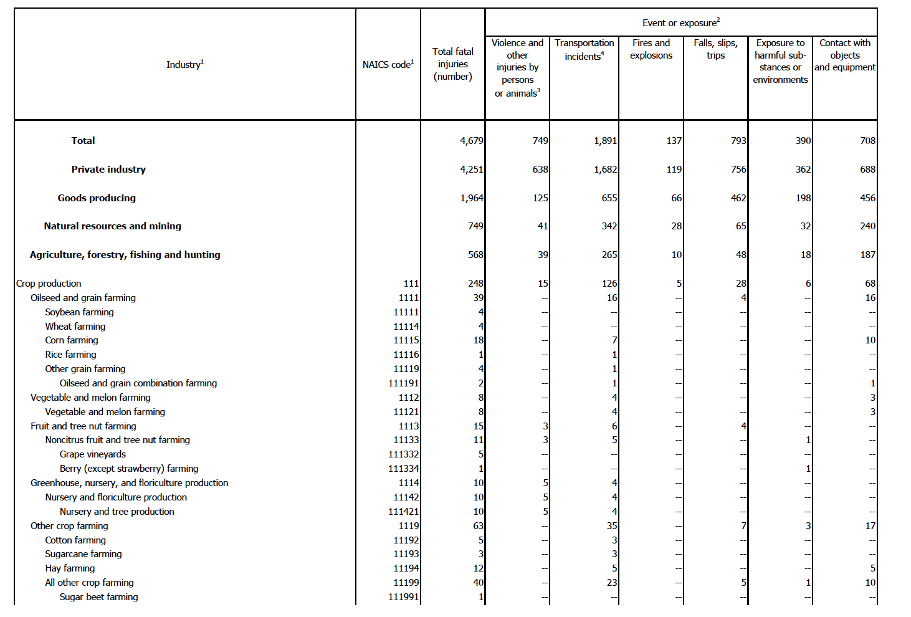
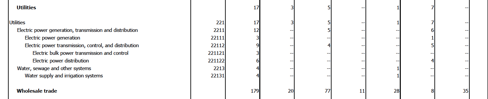
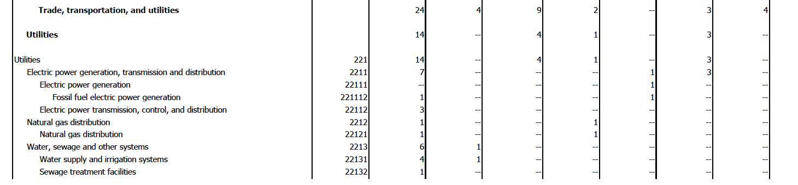
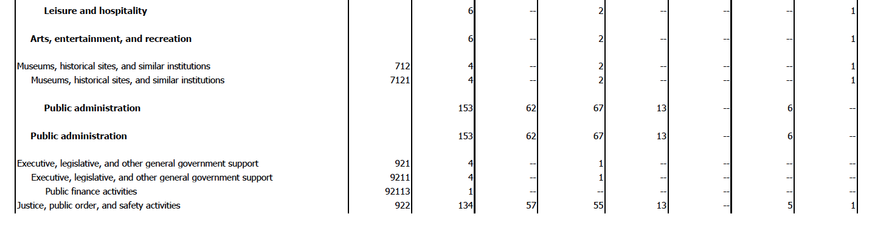
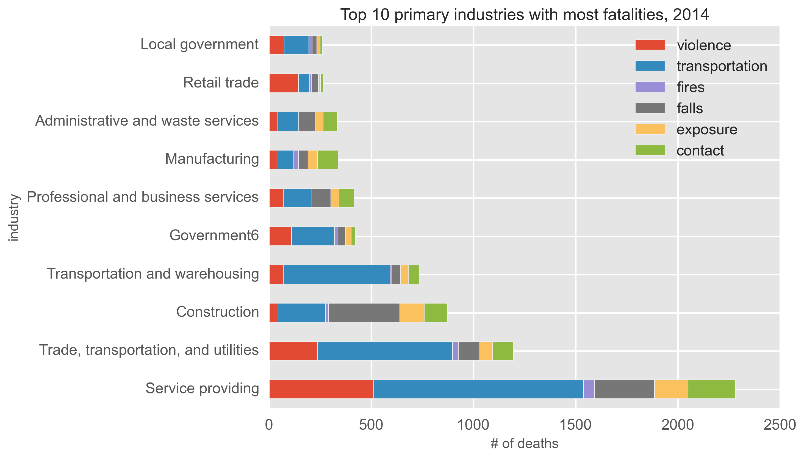
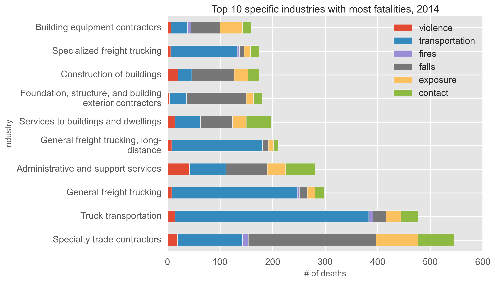
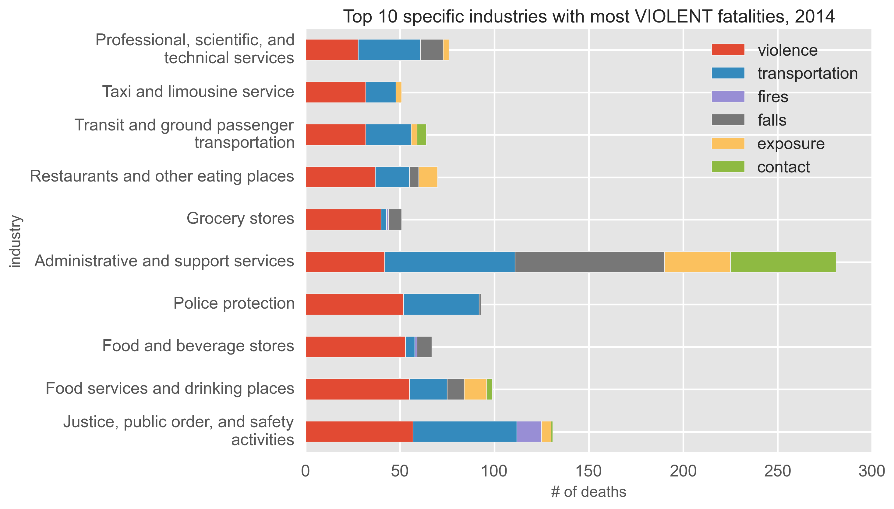
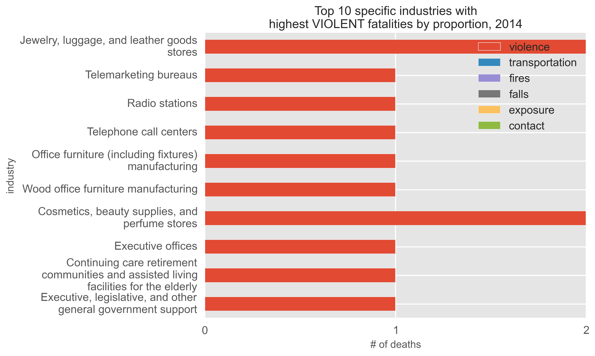
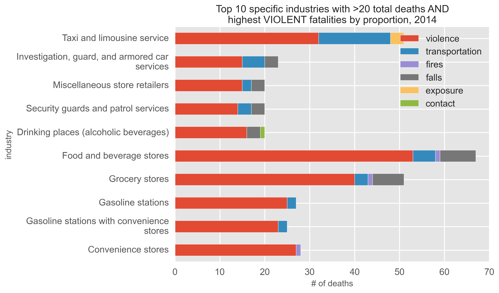

Working with data from the Bureau of Labor Statistics, part 1
(or how I learned to scrape data from a multi-page pdf table)
Introduction
The Bureau of Labor Statistics (BLS) website has many datasets pertaining obviously
to labor statistics - in particular, the main subjects are:
- Inflation and Prices
- Employment & Unemployment
- Pay & Benefits
- Spending & Time Use
- Productivity
- Workplace Injuries
- International
- Regional Resources
There are lots and lots of data files on the website (it IS a government statistics organization, after all), for any
data junkie to be quite happy with. However, these are
maddeningly horrific and ugly files! While some of the datasets are in relatively clean Microsoft Excel
format, the majority are either contained in tables within PDF files, or in easy-to-parse but very cryptic plain text
files.
For the first part of this section, I'll give an example of working with one of the BLS's pdf files. I will investigate
Workplace Injuries, specifically focusing on the number of different types of fatalities in each industry. The primary
file is "cftb0286.pdf", and can be found here, under
"2014 Census of Fatal Occupational Injuries (preliminary data) -
Industry by event or exposure, 2014 (PDF 272K)".
Here is the first page of the 35-page document:

Here are some other sections from the same document:
from page 12:

from page 31:

from page 33:

What is wrong with this images??
- "Total" column is unclear
If you look closely, you can see some quirky things with the data. So many quirky things...
First, we can see that the table has 9 primary columns: Industry; NAICS code; Total fatal injuries; Violence and other
injuries by persons or animals; Transportation incidents; Fires and explosions; Falls, slips, trips; Exposure to
harmful substances or environments; and Contact wiht objects and equipment. NAICS stands for the North American
Industry Classification System, and is just the numeric code for each industry/sub-industry/etc. Based on the name, I would assume "Total"
to be the sum (or total) of the last 6 columns that give the various fatality causes. However, we can
very quickly see that this is not the case, if you look at the first example and the rows for Soybean farming, Wheat farming,
Corn farming, Rice farming, etc. What total is, then, is quite cryptic.
- Relationship between industries and sub(-sub)-industries is unclear
Second, we see that there are both primary industries and sub-industries (and sub-sub-industries) represented in the
data. Primary industries
do not have a NAICS code, while sub-industries (and sub-sub industries) do. Another distinction between the former and the latter is
that each sub-industry is indented in the pdf file. We can see this in the first example, where Crop production contains Oilseed and grain
farming, and Oilseed and grain farming contains Soybean farming, Wheat farming, Corn farming, Rice farming, and Other grain farming, and so on.
I would expect that the sub-industries numbers should add up to make the priamary industry's numbers, but
this is not the case. If we look at the 4th example, we see that Executive, legislative, and other general government support
has 4 total deaths, while its sub-industry, Public finance activities, has just 1 total death. We can see this same issue throughout all
of the images, and in the entire original pdf table. So, the relationships between the various industries and sub(-sub)-industries is unclear.
Third, there are numerous duplicated rows. In the 4th example, the Public administration row is repeated twice.
In that same example, the Executive, legislative,
and other general government support rows are almost identical, except for a slight difference in the NAICS number. While these rows
occur next to one another, we also see duplicates occurring across different pages. For example, we see Utilities; Electric power
generation, transmission, and distribution; Electric power generation; Water, sewage and other systems, etc. rows occurring first on
page 12 and then page 31. In this case, the NAICS numbers are identical, while the actual death figures are different.
This occurs dozens of throughout the document. How do we deal with such inconsistencies?
Fourth, parsing a pdf in python (or in any language) is not straight-forward.
A pdf is just a stable, static image that prints easily, and is not meant for text/number extraction.
However, I don't want to print the document - I want the
information in a nice, tidy format, preferably a python Pandas dataframe! While there are a few python libraries as well as stand-alone websites that
claim to do pdf parsing, I didn't have too much luck with what I tried, with information not getting parsed correctly.
Solutions
The most important thing is that we are aware of these issues, particularly points 1-3. We can use the Total column, and just
keep in mind that the
different fatality categories do not necessarily add up to 'Total', for whatever reason. For point 2, I will treat each row
as its own separate industry category, but differentiate between industries in bold font (that lack NAICS
codes) and sub-industries in normal font that do have NAICS code, calling the former "non-specific industries" and the latter
"specific industries" (and filtering on the presence or absence of NAICS code). For point 3, I will just be careful
to not add in duplicate rows when creating
the dataframe. If rows are completely identical, I will only input one copy. When Industry name and NAICS code are identical but other column values are not, I will input both rows, and use an average.
for the actual analysis. And for the fourth point...
Transforming data from PDF tables to Pandas dataframes
So, I did something (maybe) a little weird for this. I copy and pasted each table from the pdf file into my favorite text editor (Sublime Text).
Is there a better way to do this? Probably. But considering I don't normally deal with pdf's, and maybe will never have to again after
this exercise, the relatively dumb way is faster in the short-run. The result of this was that
each row of the table was correctly placed into its own line in the text file. I then saved the file as a normal text file, and then
opened up Jupyter Notebook (formally Ipython Notebook), to do the rest of the data munging and analysis.
Here, I'm opening the file ("fatalities.txt") and appending each line into an array.
def open_file():
with open("fatalities.txt", "r") as ins:
array = []
for line in ins:
array.append(line)
return array
However, there are lots of issues:
- Each row of the table is just one big entry in the array. I want to break down each
row correctly, so that "industry", "naics code", "total fatal injuries", "violence", "transportation", "fires", "exposure",
and "contact" are all placed in their cells/columns
- We need to get rid of extraneous whitespace characters
- The original PDF table uses "--" to signify the number 0 - let's fix this
- Everything is a string - let's change the numeric values into integers
- As mentioned before, the original PDF contains duplicated rows - let's get rid of these
def clean_up(array):
for line_num,line in enumerate(array):
# Remove newline character
line = array[line_num].strip("\n")
if "--" in line:
# Change "--" to 0
line = re.sub("--", "0", line)
array[line_num] = line
return array
def create_df(array):
# Transform data from text to appropriate arrays
industry=[]
naics=[]
total=[]
violence=[]
transportation=[]
fires=[]
falls=[]
exposure=[]
contact=[]
regex = re.compile("[A-Z]")
regex2 = re.compile("[a-z]")
last_industry_name = "hello" # silly initial value
for line_num,line in enumerate(array):
words = line.split()
linetitle = []
for w in words:
if regex.match(w[0]):
words = words[1:]
linetitle.append(w)
industry_row=' '.join(linetitle)
elif regex2.match(w[0]):
words = words[1:]
linetitle.append(w)
industry_row=' '.join(linetitle)
elif w[0] == "(":
words = words[1:]
linetitle.append(w)
industry_row=' '.join(linetitle)
if industry_row != last_industry_name: # get rid of duplicate rows in pdf
for w_num,w in enumerate(words):
words[w_num]=w.replace(",","") # remove commas in numbers
if len(words) == 7: # does not include NAICS code
industry.append(industry_row)
naics.append(0)
total.append(int(words[0]))
violence.append(int(words[1]))
transportation.append(int(words[2]))
fires.append(int(words[3]))
falls.append(int(words[4]))
exposure.append(int(words[5]))
contact.append(int(words[6]))
last_industry_name = industry_row
elif len(words) == 8: # does include NAICS code
industry.append(industry_row)
naics.append(int(words[0]))
total.append(int(words[1]))
violence.append(int(words[2]))
transportation.append(int(words[3]))
fires.append(int(words[4]))
falls.append(int(words[5]))
exposure.append(int(words[6]))
contact.append(int(words[7]))
last_industry_name = industry_row
else:
# Some kind of error, look at it manually
print line_num
else:
pass
# many, many duplicated rows in pdf file
# Create dictionary of arrays
d={'industry':industry,
'naics': naics,
'total': total,
'violence': violence,
'transportation': transportation,
'fires': fires,
'falls': falls,
'exposure': exposure,
'contact': contact}
# Create pandas dataframe object from dictionary
df = pd.DataFrame(d)
cols = ['industry','naics','total','violence','transportation','fires','falls','exposure','contact']
df = df[cols]
return df
Ok, phew, that accomplishes all that, and now we have a mostly functioning dataframe. We can now create
some helper functions, so that we can:
- Create new features, such as the percent of all fatalities for an industry that are
due to violence (i.e. divide 'violence' column by 'total' column. NOTE: the original
data is quite messy, such that some rows have 0 'total' fatalities but non-zero entries
for specific categories - in those cases, we will insert a NaN rather than an Inf
- Create 'sub-dataframes', that will aid in plotting
- Melt dataframes to get a long format
def modify_df(df):
df['violenceP']=df.violence/df.total
df['transportationP']=df.transportation/df.total
df['firesP']=df.fires/df.total
df['fallsP']=df.falls/df.total
df['exposureP']=df.exposure/df.total
df['contactP']=df.contact/df.total
# replace any inf values with nan values
df=df.replace([np.inf, -np.inf], np.nan)
return df
def df_subset(df,column_name,num,specific):
# Industries with most fatalities
if specific == False:
tempdf=df[df.naics==0][5:].sort_values(by=column_name,ascending=False)[0:num]
else:
tempdf=df[df.naics!=0][5:].sort_values(by=column_name,ascending=False)[0:num]
return tempdf
def df_melt(df):
tempdf = pd.melt(df[['industry','naics','violence',\
'transportation','fires','falls','exposure','contact']],
id_vars=["industry","naics"],
var_name="type",value_name="counts")
return tempdf
Exploratory analysis time!
Now that that's all done, let's see some pictures! Pandas is so great in that we can create
plots directly from dataframes, rather than directly using matplotlib or seaborn. Here are a few images:
This bar chart contains the top 10 primary industries with the most fatalities in 2014, with each bar colored by the 6
different fatality causes.
Fatality causes are abbreviated as follows:
- Violence and other injuries by persons or animals: "Violence"
- Transportation incidents: "Transportation"
- Fires and explosions: "Fires"
- Falls, slips, trips: "Falls"
- Exposure to harmful substances or environments: "Exposure"
- Contact with objects and equipment: "Contact"
Service providing had the most fatalities in that year, with ~2250 deaths. Of these
deaths the majority were caused by transportation. Indeed, transportation was the leading cause of workplace fatalities in
many of the top general industries. Only Retail trade, Manufacturing, and Construction differeed from this trend, with
violence, contact, and falls as their leading causes of death, respectively.

The next bar chart contains the top 10 SPECIFIC industries with the most fatalities in 2014. These are the sub(-sub)-industries,
i.e. the rows in the original table that contained a non-empty NAICS field.
Most of these industries are connected to either the transportation of goods or the construction field, with
Transportation and Falls as the major causes
of fatalities in these industries.

The next bar chart shows the top 10 specific industries with the most fatalities caused by Violence, in 2014.

We can also look at a bar chart that shows the top 10 specific industries with the highest PROPORTION of fatalities caused by
Violence, in 2014.

If we look at the x-axis in the above plot, we see that the actual total number of deaths is either 1 or 2. So, while these
industries' fatalities are 100% caused by violence, it would be inaccurate to say that these industries are really dangerous. Let's
filter the data by only including industries that have at least 20 total deaths, to get the next plot. Here, we see that many of the
industries that have a high proportion of deaths due to violence are quite similar. The top 6 industries with the
highest proportion of violent deaths are: Convenience stores, Gasoline stations with convenience stores, Gasoline stations, Grocery stores,
Food and beverage stores, and Drinking places (alcoholic beverages).
20 fatalities, specific industries" width="80%">